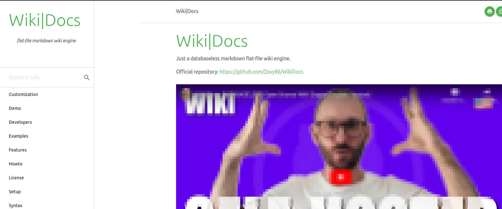

Confira os projetos no meu GitHub, onde posso explorar novas ideias e aprimorar iniciativas já existentes.

Portfólio simples
Portfólio simples usando HTML e CSS.

Uptime Kuma
Ferramenta de monitoramento auto-hospedada e fácil de usar.

Beszel
Hub leve de monitoramento de recursos de servidor com dados históricos.

BookStack
Uma plataforma para armazenar e organizar informações e documentação.

Documentação
WikiDocs
Apenas um mecanismo wiki de arquivo simples em markdown sem banco de dados.